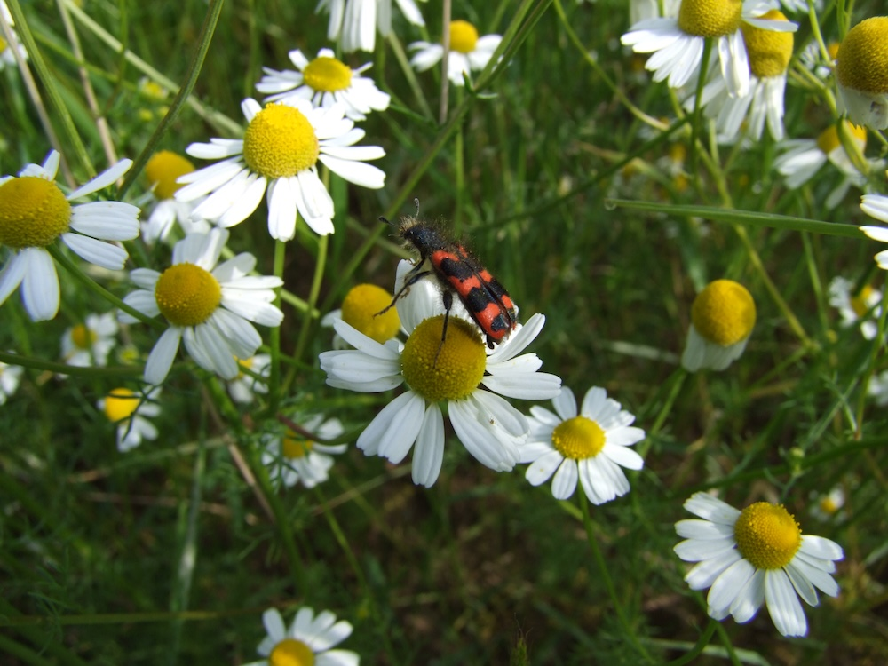
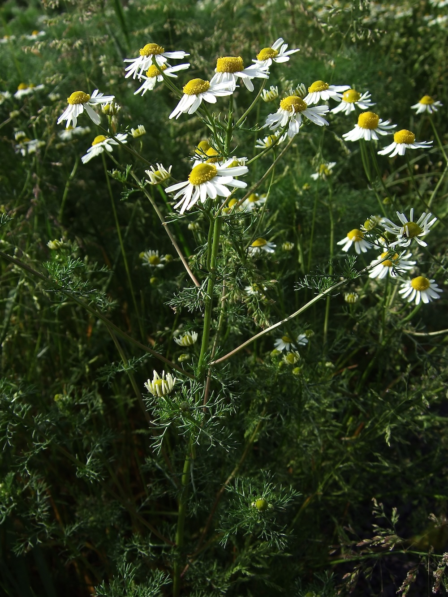

Der Geruchstest
Echte Kamille riecht unverkennbar nach Kamille — süßlich, leicht würzig, mit einem Hauch von Apfel. Wer beim Pflücken am Blatt reibt, weiß sofort: das ist sie. Im Unterschied zur Geruchlosen Kamille (Tripleurospermum inodorum), die völlig ohne Geruch ist. Plus: Der Blütenboden ist HOHL (durchschneiden, Loch sichtbar) — bei der Geruchlosen Kamille massiv. Zwei Tests, eine eindeutige Bestimmung.
Die Apotheke der Wiese
Kamille ist DIE Heilpflanze schlechthin — entzündungshemmend, krampflösend, beruhigend, antibakteriell. Wirkstoffe wie Bisabolol, Chamazulen und Apigenin sind wissenschaftlich gut erforscht. Anwendungen: Tee bei Magenbeschwerden, Spülung bei Halsentzündung, Dampfbad bei Erkältung. Eine der wenigen Heilpflanzen, deren Wirkung wirklich solide belegt ist.